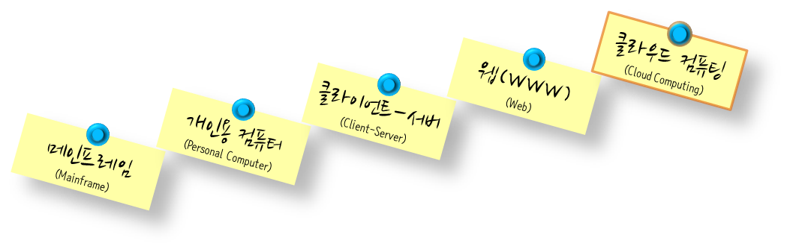
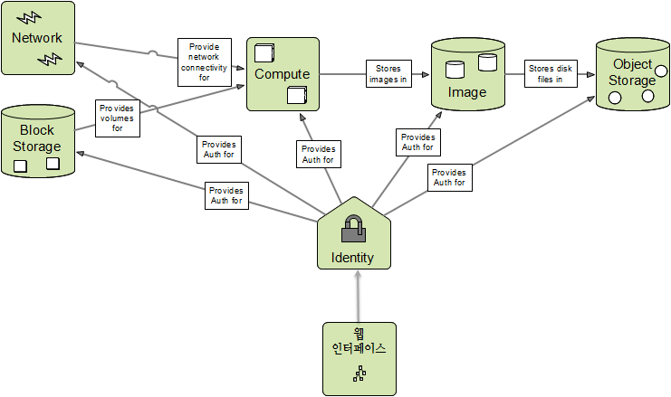
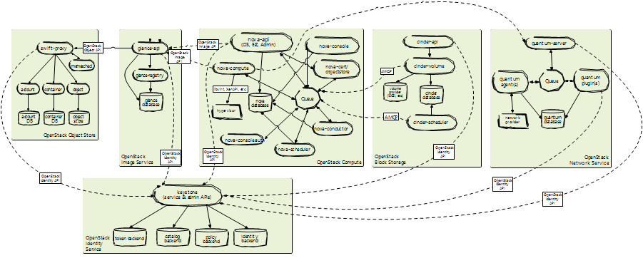

$100 달러 오픈 슈퍼 컴퓨터
오픈스택(OpenStack)
학습 목표
- 오픈스택을 소개한다.
- 오픈스택 중요 설계 결정 사항과 이를 통해 구축된 아키텍처를 이해한다.
- 오픈스택을 설치한다.
오픈스택은 클라우드 컴퓨팅 오픈 소스 프로젝트로, 프로그램 가능한 IT 인프라로 클라우드 OS로도 잘 알려져 있다. 2012년 창설된 비영리 단체인 OpenStack Foundation에서 유지, 보수하고 있으며 라이선스는 아파치 라이선스로 상업적 이용도 가능한다. 특히, AMD, 인텔, 캐노니컬, 수세 리눅스, 레드햇, 시스코 시스템즈, 델, HP, IBM, NEC, VM웨어, 야후! 등 150개 이상의 회사가 자발적으로 프로젝트에 참가하고 있으며, 리눅스 기반이며 6개월 마다 시규 버젼을 출시하고 있다.1
1. 왜 오픈스택인가?
점점 컴퓨팅 패러다임이 급격하게 변화하고 있다. 이제는 웹 인터넷이 누구나 사용하는 기본이 되었고, 이제는 클라우드 컴퓨팅이 대세로 잡아가고 있다.

2. 오픈스택 아키텍쳐
오픈스택는 수많은 글로벌 기업의 최고의 엔지니어가 이제 제법 시간을 두고 개발을 진행해서 소프트웨어 자체도 매우 복잡해졌다. 하지만, 오픈스택을 개발할 당시 정한 기본적인 아키텍쳐 결정 사항은 변한 것은 없고, Solinea에서 글리즐리(Grizzly) 버젼2으로 작성된 오픈스택 아키텍쳐를 참고 살펴보는 것이 빠른 시간 내에 핵심적인 내용을 섭렵하는데 도움이 될 것이다.
Solinea에서 발표된 오픈스택 개념 아키텍처를 대쉬보드(Horizon)을 별도로 빼서 핵심 내용만 재구성

핵심 구성요소
- 컴퓨터(Compute): 노바(Nova)
- 객체저장소(Object Storage): 스위프트(Swift)
- 이미지관리(Image Management): 글랜스(Glance)
- 인증관리(Identify Management): 키스톤(Keystone)
- 인터페이스(Dashboard): 호라이즌(Horizon)
- 네트워킹(Networking): 뉴트론(Neutron)
- 블록저장소(Block Storage): 신더(Cinder)
- 모니터링과 계량기(Monitoring and Metering): 실로미터(Ceilometer)
- 오케스트레이션(Orchestration): 히트(Heat)
오픈스택 아키텍처(그리즐리 버젼)

오픈스택 툴체인(Tool-Chain)
DevStack: 단일 노드 All-in-One 설치 PackStack: RDO
오픈스택 설치도구 모음
- 수작업 설치
- 쉘스크립트
- 설치 도구 활용
- DevStack: 우분투
- PackStack: 레드햇
- Mirantis Fuel
- Ubuntu Juju
- 형상관리 도구
DevStack 설치
- 네크워크 환경설치
- 사전 준비
- DevStack 설치
- DevStack 환경설정 파일 변경
- OpenStack 설치
All-in-One, 노바 네트워크
형상 관리(Configuration Management)
| 구분 | 도구 |
|---|---|
| 쉘 | Ansible |
| DSL | Puppet, Chef |
| 언어 | Fabric |
Puppet은 운영자 중심에서 출발했고, Chef는 개발자 중심으로 출발했으나, 두가지 툴모두 서로의 장점을 벤치마킹해서 둘다 엇비슷한 기능을 제공하고 있다.
자동화 3대 요소
- 자원 관리(Provisioning)
- 프로세서, 메모리, 디스크 크기 등 자원 설정
- 형상 관리(Configuration)
- 생성된 가상컴퓨터(VM)에 툴체인 설치: 예를 들어 LAMP,
- 배포 관리(Deployment)
- 생성된 가상컴퓨터에 형상 관리를 통해 설치된 각종 툴 체인이 양산단계로 넘겨준다.
형상관리 - 배포관리 툴체인 사례
- 형상관리: 퍼펫(Puppet)
- 배포관리: 엠컬렉티브(mCollective), 히에라(Hiera)